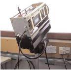

Chilbolton Global Broadcast System

GBS beacon receiver.
Introduction
Clouds and rainfall along
a single slant path can result in signal fading for satellite communication systems.
The GBS uses Ka-band measurements to observe slant path propagation characteristics
and to demonstrate and predict the impact the atmosphere has on signal strength.
Linking two or more satellite ground stations
together, system operators can use this
technique to mitigate signal fading and observe site diversity at Ka-band wavelengths.
By combining these results with data
from the main meteorological radar
CAMRa, the influence of the variation
of raincells over time and space on
the orientation and separation
of satellite ground stations can be observed.
Data format
Data are available form the Chilbolton and Sparsholt sites
from 19th August 2003 and 8th October 2003 respectively.
The files are in NetCDF format.
Conditions of use
If Chilbolton GBS data is used in any
publication or report then acknowledgement must be given to the
Radiocommunications Research Unit at the Rutherford Appleton Laboratory for
providing the data.
Who to contact
If you have problems obtaining the data,
please contact the British Atmospheric Data Centre.